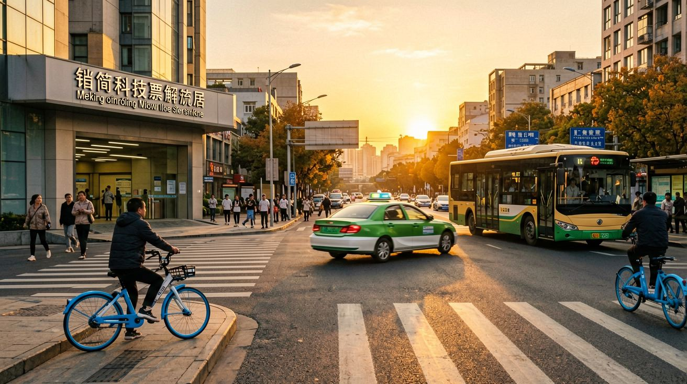
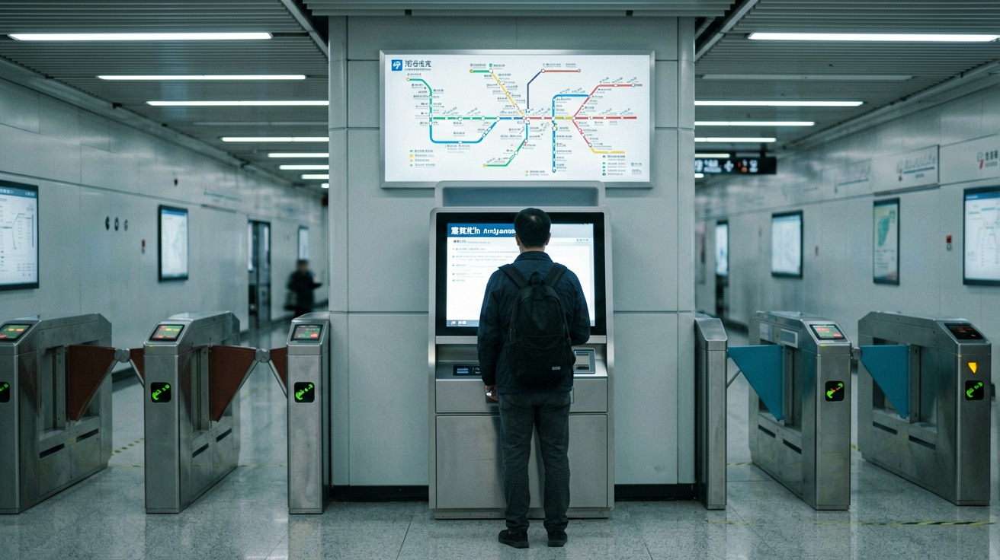
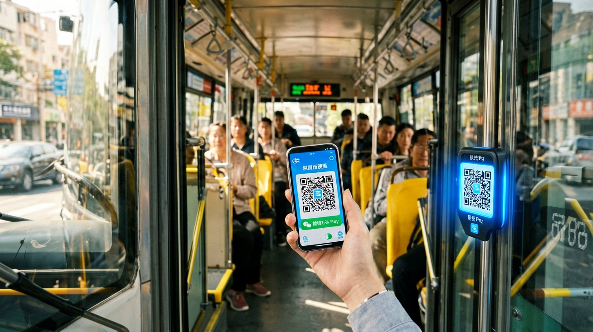
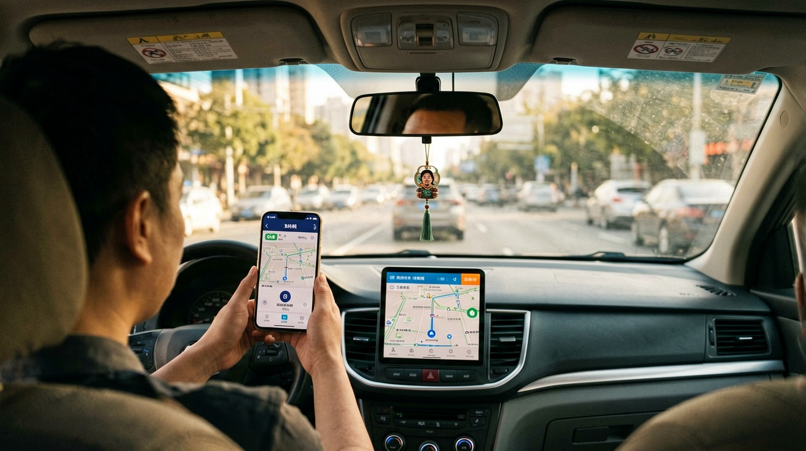
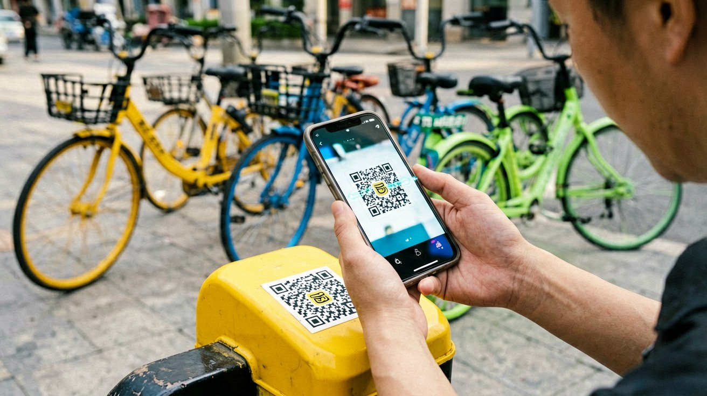

Last updated: June 2026.
You step out of your hotel in Shanghai, open a map app, and see that your destination is only four kilometres away. Back home you would call an Uber and arrive in ten minutes. In a Chinese city, you have five different ways to cover that distance — and at least two of them will cost you less than one US dollar. The challenge is not the price. It is knowing which option actually works for someone without a Chinese ID card, without a local bank account, and without the ability to read Chinese characters. This article gives you the answer.
By the end of this guide you will understand how to pay for every form of urban transport, how to navigate metro stations, when a bus makes more sense than the subway, how to flag a taxi and communicate your destination, and how to unlock a shared bike with your phone in under thirty seconds. Every method described here works for passport holders in 2026.

Chinese cities give you four main ways to move around, each suited to a different situation. The metro is your backbone. Every major Chinese city — and most mid-sized ones — has a subway system. Trains run every two to six minutes. Stations have English signage and announcements. A single trip costs between 2 and 10 RMB, depending on distance. If your destination appears on the metro map, the metro is almost always your best option.
Buses fill the gaps. They reach neighbourhoods the metro does not cover, and surface streets let you watch the city through the window. A ride costs 1 to 3 RMB. The trade-off: bus stops are harder to identify than metro stations, route information is usually in Chinese only, and buses move at the speed of traffic. Use buses when your map app confirms a specific route and you are not in a hurry.
Taxis and ride-hailing cover the rest. A taxi costs roughly 10 to 25 RMB for a short trip — still cheap by global standards. DiDi is covered in detail in our Essential Apps guide, but the short version: DiDi works with an international phone number, accepts foreign credit cards, and has an English interface. Regular street taxis are also widely available, though they require more communication effort.
Bike-sharing is the wildcard. Tens of millions of shared bicycles — painted in the bright colours of Meituan (yellow), Hello Bike (blue), and DiDi Qingju (green) — sit on sidewalks across every major city. Unlocking one costs about 1.5 RMB for the first thirty minutes. For trips under three kilometres on a clear day, nothing beats a shared bike for speed, cost, and the pleasure of moving through a Chinese city at your own pace.

Using the metro in a Chinese city follows the same basic flow everywhere. First, find the entrance — look for a blue sign with a stylised track-and-tunnel logo and the characters 地铁. In tier-one cities like Beijing, Shanghai, Guangzhou, and Shenzhen, these signs also include "Metro" or "Subway" in English. Enter the station and you face a security checkpoint. Place your bag on the conveyor belt and walk through the metal detector. Security is mandatory at every station, every time, but the process takes less than ten seconds.
Once past security, you need to get through the fare gate. This is where most first-time visitors freeze. You have four options, and the one you choose depends on what you have already set up on your phone.
The easiest method in 2026 is Alipay's Transport QR code. Open Alipay, tap "Transport" on the home screen, and a QR code appears. Hold it to the scanner on the fare gate and the gate opens. The fare is deducted from your Alipay balance or linked card. If you have already set up Alipay with your passport and foreign bank card — covered in our Mobile Payment guide — this method requires zero extra steps. WeChat Pay offers an identical Transport QR function.
The second method, newly available in many cities as of 2025–2026, is tapping your international bank card directly at the gate. Metro systems in Beijing, Shanghai, Guangzhou, Shenzhen, Chengdu, and a growing list of other cities now accept Visa and Mastercard contactless payments. Look for the card reader symbol on the fare gate — if you see it, just tap your card and walk through. No app, no QR code, no ticket. This is the simplest option if your departure city is one that supports it.
The third method is the single-ride ticket machine. Every station has ticket vending machines with an English-language option. Tap the screen to switch to English, select your destination station on the map, insert cash (notes or coins) or in some machines tap your bank card, and the machine dispenses a small plastic token or card. Touch it to the fare gate to enter, and insert it into the slot when you exit. This method works everywhere but adds a few minutes to every trip.
The fourth method is a city transport card, a rechargeable plastic card sold at station service counters. You load cash onto it and tap it at fare gates. For a short stay this is usually more trouble than it is worth — you pay a deposit, you need to find the counter to buy and return it, and you tie up cash you might not spend.
Once through the gate, follow the signs to your line. Metro lines are colour-coded and numbered. Station signs point you toward the correct platform with arrows and the line's terminal station name. Platform screen doors line every station, and overhead displays show the waiting time for the next train — usually between two and six minutes. Inside the train, electronic displays above the doors show the line map with the next station flashing. Announcements play in Mandarin and English in most cities. Count stops on the map as you ride: the flashing dot on the display shows exactly where you are.
When you arrive, follow the exit signs. Major stations have four or more exits labelled A, B, C, D — sometimes going up to H or beyond. Your map app will tell you which exit to take. Picking the wrong exit can put you on the opposite side of a six-lane road with no pedestrian crossing in sight, so spend the extra three seconds to check. Exit through the fare gate — tap your QR code again, insert your token, or tap your card — and you are on the street.

A bus ride in China costs 1 to 3 RMB regardless of distance — a fixed fare on nearly all urban routes. This makes buses the cheapest motorised transport in the country. The catch is that using a bus as a non-Chinese reader requires more preparation than using the metro.
Route planning is the first step. Open your map app — Apple Maps on an iPhone, or Amap on Android — and enter your destination. Switch the transport mode to transit and the app shows you which bus route to take, where the stop is, and how many stops to ride. Memorise the bus route number and count the stops as you go. Many buses now have an electronic display at the front showing the next stop in Chinese and pinyin, but this is not universal. Rely on your map app's live location to know when to get off.
Boarding a bus in China works differently from what you may be used to. In most cities you board through the front door and exit through the rear door. Payment happens as you board — you scan a QR code or tap a card at the reader next to the driver. The payment QR code is the same Alipay or WeChat Transport code you use for the metro. Simply show it to the scanner, hear the beep, and find a seat. Some cities also accept international bank card taps on buses, but this is less common than on the metro — assume you will need your phone.
A few practical points. Bus stops are marked by a simple sign with route numbers, but route maps at the stop are almost always in Chinese only, as are the scrolling text displays inside the bus. During morning and evening rush hours — roughly 7:30 to 9:00 and 17:30 to 19:00 — buses can be extremely crowded and stuck in traffic. Outside those windows, they are a relaxed and scenic way to travel. Keep your phone charged: you need it for route guidance, payment, and exit confirmation. If the battery dies mid-route, you will have a problem.

Ride-hailing through DiDi is the smoothest way to get door-to-door in a Chinese city, and the Essential Apps guide covers setup in detail. Here is what you need to know specifically for city transport: DiDi offers several service tiers. Express is the standard car, Premier is a higher-grade vehicle at about twice the price, and Taxi hails a regular street taxi through the app — useful because the fare is metered and you can pay the driver in cash if your app payment fails. DiDi's in-app messaging translates your English messages into Chinese for the driver and vice versa, solving the language barrier almost entirely.
If you hail a taxi from the street — and in most Chinese cities, green or blue-and-yellow taxis are abundant — you face a different challenge: communication. Most taxi drivers do not speak English. Before you get in, have your destination ready as Chinese text on your phone screen. Show it to the driver through the window and confirm with a nod. The driver starts the meter, and you pay at the end. Taxi meters display the fare in RMB. Payment methods: cash is always accepted, and most taxis now also accept Alipay or WeChat QR payments — the driver will point to a QR code sticker. Tipping is not expected and not part of the culture.
A note on safety and fairness. Taxis in Chinese cities are regulated, metered, and generally honest. At airports and train stations, ignore anyone approaching you in the arrival hall offering a "taxi" — these are unlicensed operators who charge several times the real fare. Walk to the official taxi queue outside the terminal instead. If a street taxi driver refuses to use the meter and names a flat price, wave the car on and hail the next one. Meter refusal is rare but it happens, and you are not obliged to negotiate.

Chinese cities are built for bikes. Dedicated bike lanes run alongside most major roads, separated from car traffic by a low barrier or a painted buffer. Flat terrain in most eastern and central cities makes cycling effortless. The three dominant bike-sharing platforms — Meituan (yellow bikes), Hello Bike (blue), and DiDi Qingju (green) — collectively maintain tens of millions of bicycles across hundreds of cities. You will see them parked on nearly every block.
Unlocking a shared bike as a passport holder is straightforward because you do not need a separate bike-sharing app. All three platforms are accessible as mini-programs inside Alipay or WeChat. Open Alipay, search for "Meituan Bike" or "Hello Bike," and the mini-program loads. Scan the QR code on the handlebar or rear fender, and the lock clicks open. Your first ride typically requires identity verification — upload a photo of your passport information page, and approval usually takes under a minute. After that, every subsequent ride is scan-and-go.
Pricing is uniform. A ride costs about 1.5 RMB for the first thirty minutes, with incremental charges beyond that. A seven-day pass costs roughly 5 to 10 RMB depending on the city and platform, giving you unlimited rides up to thirty minutes each. If you plan to use shared bikes more than three or four times, the pass pays for itself on the second day.
Ending a ride requires one specific action that first-time users often miss: you must park the bike inside a designated parking zone. The mini-program's map shows these zones as blue rectangles. If you lock the bike outside a zone, the app warns you and may charge a small penalty — typically 2 to 5 RMB. Designated zones are everywhere in city centres, so this is rarely a problem. Lock the bike manually by pushing down the latch on the rear wheel, and the app confirms your ride has ended and displays the fare.
Electric shared bikes — recognisable by their thicker frames and a battery indicator on the handlebar — are also common. They cost slightly more, around 2 to 3 RMB per ride, and are capped at 25 km/h. The unlocking process is identical. Helmets are built into the bike's basket on newer models; older models may not have one. Chinese traffic law requires helmet use on electric bikes, though enforcement for shared e-bike riders is inconsistent. Use your judgement.
When you ride, stay in the bike lane. Car traffic in Chinese cities is dense and drivers expect bikes to stay in their lane. At intersections, follow pedestrian signals — many large intersections have a dedicated bike crossing phase. Ride defensively and expect the unexpected from electric scooters, which are silent, fast, and ubiquitous. Millions of people bike in Chinese cities every day, and the infrastructure supports it well. Once you get used to the rhythm, you will find it is one of the best ways to explore.
This article is based on information as of June 2026.
Sources
Policies and available payment methods may change. Verify current options before your trip.